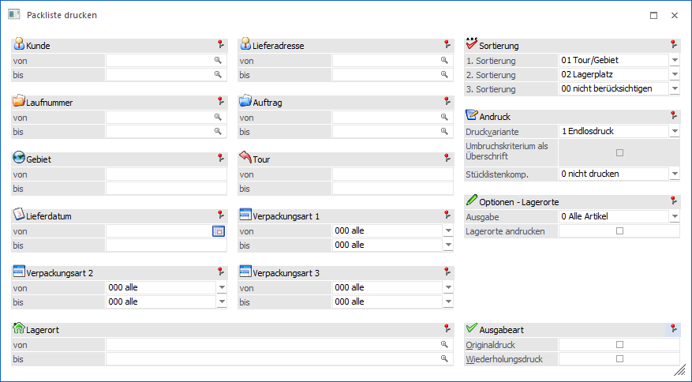
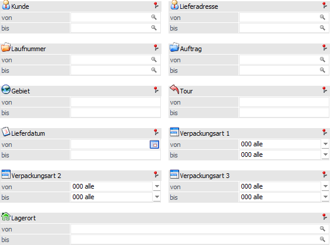
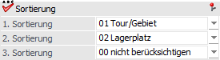
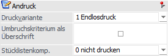
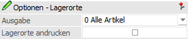
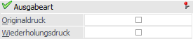
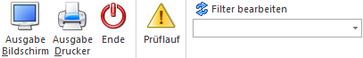
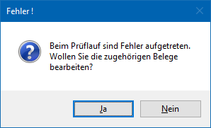
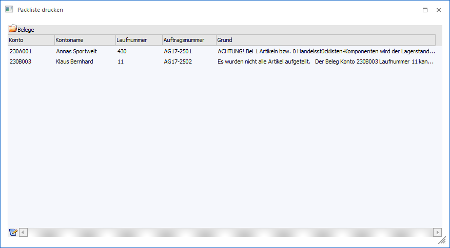

Im Programm "Packliste drucken", welches über den Menüpunkt…
1 WinLine FAKT
1 Erfassen
1 Kundenbestellungen
1 Packliste drucken
… geöffnet werden kann, können Packzettel (Lagerlisten) ausgegeben werden.
Voraussetzung
Es stehen all jene Belegzeilen zum Ausdruck zur Verfügung, welche zuvor im Programm "Kundenbestellungen bearbeiten" zur Lieferung vorbereitet wurden.

Die Ausgabe der Packliste kann durch folgende Kriterien eingeschränkt bzw. beeinflusst werden:
Selektion

Ø Kunde von / bis
An dieser Stelle kann auf die Kundennummer eingeschränkt werden.
Hinweis
Ob es sich bei der Nummer um jene des Rechnungsempfängers oder der Lieferadresse handelt, ist abhängig von der Einstellung "Hauptkonto für Belege" (WinLine START - Parameter - FAKT-Parameter - Belege - Allgemein - Option "Hauptkonto für Belege").
Ø Lieferadresse
In diesen Feldern kann auf die Lieferadressen eingeschränkt werden, welche in der Packliste berücksichtigt werden sollen.
Ø Laufnummer
Hier kann auf die Laufnummern der Aufträge selektiert werden, welche in der Packliste ausgegeben werden sollen.
Ø Auftrag von / bis
An dieser Stelle kann eine Einschränkung auf die Auftragsnummern erfolgen.
Ø Gebiet von / bis
Hier kann auf das Gebiet eingeschränkt werden, welches beliefert werden soll.
Ø Tour von / bis
In diesen Feldern kann auf die Tour eingeschränkt werden, welche auf der Packliste berücksichtigt werden soll.
Ø Lieferdatum von / bis
An dieser Stelle kann auf das Lieferdatum der Auftragszeilen selektiert werden.
Ø Verpackungsart von / bis
In diesen Feldern kann eine Selektion auf die Verpackungsart der Auftragszeilen vorgenommen werden.
Ø Lagerort von / bis
Für Artikel mit einer Lagerortstruktur kann in diesen Feldern eine Selektion auf die Lagerorte vorgenommen werden. Artikel ohne eine Lagerortstruktur sind von dieser Selektion nicht betroffen.
Sortierung

Ø 1. Sortierung / 2. Sortierung / 3. Sortierung
An dieser Stelle kann die Sortierung der Packliste definiert werden, wobei eine 3-stufige Sortierung möglich ist (z.B. wird eine Packliste pro Kunde benötigt, in welcher wiederum nach Lagerorten und Aufträgen sortiert wird). Folgende Kriterien stehen hierbei zur Verfügung:
ü 00 - nicht berücksichtigen (nur bei der 3. Sortierung)
ü 01- -Tour/Gebiet
ü 02 - Lagerplatz
ü 03 - Artikelnummer
ü 04 - Kundennummer
ü 05 - Priorität
ü 06 - Lieferadresse
ü 07 - Verpackungsart 1
ü 08 - Verpackungsart 2
ü 09 - Verpackungsart 3
ü 10 - Lagerort
ü 11 - Auftrag
ü 12 - Lieferdatum
Hinweis
Die ausgewählten Sortierkriterien werden bei einer Ausgabe der Packliste benutzerspezifisch gespeichert.
Achtung
Bei der Ausgabe der Packliste gibt es die Möglichkeit sogenannte SUB-Formulare für den Ausdruck zu verwenden, um Ausprägungsartikel in einer Rasterform / Matrix darzustellen. Dieses wird automatisch unterbunden, wenn die Sortierung nach "02 - Lagerplatz", "03 - Artikelnummer", "07 bis 09 - Verpackungsart 1-3", "10 - Lagerort" oder "12 - Lieferdatum" erfolgt.
Andruck

In diesem Bereich können allgemeine Einstellungen für den Ausdruck vorgenommen werden. Diese werden bei einer Ausgabe der Packliste benutzerspezifisch gespeichert.
Ø Druckvariante
Die Packliste kann in unterschiedlichen Varianten ausgegeben werden. Folgende Möglichkeiten stehen zur Auswahl:
ü 1 - Endlosdruck
Die Packliste
wird gemäß der Sortierkriterien sortiert. Während der Ausgabe erfolgt nur am
Ende einer jeden Seite ein Seitenumbruch.
ü 2 -
Umbruch/Sortierkriterium
Die Packliste wird gemäß der Sortierkriterien
sortiert. Sobald sich das 1. Sortierkriterium ändert, erfolgt der Umbruch auf
eine neue Seite.
Beispiel
Die Sortierung soll nach "Lieferadresse", "Lagerort" und "Artikelnummer" erfolgen. Bei der Einstellung "2 - Umbruch/Sortierkriterium" wird zunächst nach den Lieferadressen sortiert und pro Lieferadresse eine neue Seite begonnen. Auf der jeweiligen Seite wird dann nach dem Lagerort und innerhalb eines Orts nach der Artikelnummer sortiert.
ü 3 - Umbruch/Sortierkriterium
2
Die Packliste wird gemäß der Sortierkriterien sortiert. Sobald sich das 2.
Sortierkriterium ändert, erfolgt der Umbruch auf eine neue Seite.
Beispiel
Die Sortierung soll nach "Lieferadresse", "Lagerort" und "Artikelnummer" erfolgen. Bei der Einstellung "3 - Umbruch/Sortierkriterium 2" wird zunächst nach den Lieferadressen und dem Lagerort sortiert und pro "Lieferadresse / Lagerort" eine neue Seite begonnen. Auf der jeweiligen Seite wird dann nach der Artikelnummer sortiert.
ü 4 - Umbruch/Sortierkriterium
3
Die Packliste wird gemäß der Sortierkriterien sortiert. Sobald sich das 3.
Sortierkriterium ändert, erfolgt der Umbruch auf eine neue Seite.
Beispiel
Die Sortierung soll nach "Lieferadresse", "Lagerort" und "Artikelnummer" erfolgen. Bei der Einstellung "4 - Umbruch/Sortierkriterium 3" wird nach den Lieferadressen, den Lagerorten und der Artikelnummer sortiert und pro "Lieferadresse / Lagerort / Artikelnummer" eine neue Seite begonnen. Dadurch steht die Sortierung auf jeder Seite automatisch fest.
Achtung
Wenn die Sortierung nach "10 - Lagerort" durchgeführt wird und ggf. auch ein Seitenumbruch erfolgen soll, muss die Option "Lagerorte andrucken" aktiviert werden!
Ø Umbruchskriterium als Überschrift
Bei den Druckvarianten "2 - Umbruch/Sortierkriterium", "3 - Umbruch/Sortierkriterium 2" und "4 - Umbruch/Sortierkriterium 3" kann die Option "Umbruchsvariante als Überschrift" aktiviert werden. Dadurch wird das Hauptumbruchskriterium automatisch auf der Packliste als Überschrift angedruckt.
Hinweis
Die weiteren Sortierkriterien stehen per Programmvariablen (0/101 bis 0/103) ebenfalls für den Andruck zur Verfügung.
Ø Stücklistenkomp.
An dieser Stelle kann der Andruck von Komponenten definiert werden:
ü 0 - nicht drucken
ü 1 - Handelsstückliste
ü 3 - Produktionsartikel
ü 4 - Alle Artikel
Hinweis
Damit der Druck der Komponenten möglich ist, müssen nachfolgende Punkte beachtet werden:
ü
Handelsstückliste
Handelsstücklistenkomponenten können nur gedruckt
werden, wenn die Handelsstückliste (HSL-Artikel) nicht vom Lager genommen
wird.
ü
Produktionsartikel
Produktionsartikelkomponenten können nur gedruckt
werden, wenn das Stücklistenfenster geöffnet wurde (eine automatische
Produktionsauftragsanlage hat stattgefunden) oder es sich um eine
auftragsbezogene Produktion handelt und der Auftrag bereits in die Produktion
eingelesen wurde.
Optionen - Lagerorte

In diesem Bereich können Lagerorteinstellungen für den Ausdruck vorgenommen werden. Diese werden bei Ausgabe der Packliste benutzerspezifisch gespeichert.
Ø Ausgabe
An dieser Stelle kann definiert werden, ob Artikel mit bzw. ohne Lagerortstruktur berücksichtigt werden sollen. Folgende Varianten stehen zur Verfügung:
ü 0 - Alle Artikel
ü 1 - Nur Artikel mit Lagerortstruktur
ü 2 - Nur Artikel ohne Lagerortstruktur
Ø Lagerorte andrucken
Mit Hilfe dieser Option werden die Lagerorte auf der Auswertung angedruckt.
Ausgabeart

Ø Originaldruck
Durch das Aktivieren dieser Option erhalten die Belegzeilen ein Kennzeichen, dass die Packliste bereits im Originaldruck ausgegeben wurde. Beim nochmaligen Druck werden diese Zeilen nicht mehr berücksichtigt.
Hinweis 1
Wird ein Auftrag bearbeitet, in dem Belegzeilen mit Originaldruckkennzeichen vorhanden sind, wird darauf gesondert hingewiesen. Auch im Programm "Kundenbestellungen bearbeiten" wird darauf hingewiesen.
Hinweis 2
Wird eine Selektion auf Lagerorte vorgenommen, werden die einzelnen Lagerorte entsprechend gekennzeichnet. Die Belegzeile wird nur dann mit einem Kennzeichen versehen, wenn alle enthaltenen Lagerorte im Originaldruck ausgegeben wurden.
Ø Wiederholungsdruck
Mit dieser Option kann festgelegt werden, ob Zeilen, welche bereits im Originaldruck gedruckt wurden, erneut mit ausgegeben werden sollen (Option ist aktiviert).
Buttons

Ø Ausgabe Bildschirm
Durch die Anwahl des Buttons "Ausgabe Bildschirm" bzw. der Taste F5 wird die ausgewählte Liste auf dem Bildschirm ausgegeben.
Ø Ausgabe Drucker
Mit Hilfe des Buttons "Ausgabe Drucker" wird die ausgewählte Liste auf dem Drucker ausgegeben.
Ø Ende
Durch die Anwahl des Buttons "Ende" bzw. der Taste ESC wird das Fenster geschlossen und keine Ausgabe durchgeführt.
Ø Prüflauf
Wird diese Funktion aktiviert (der Button bleibt solange aktiviert, bis dieser erneut angewählt wird - die Speicherung erfolgt benutzerspezifisch), werden vor der Ausgabe der Packliste die Belege gerechnet und geprüft (die Prüfroutine gleicht der im Belegerfassen). Folgende Szenarien werden dabei kontrolliert:
ü Rohertragsunterschreitung
ü Kreditlimitunterschreitung
ü Hauptartikel nicht aufgeteilt
ü Hauptartikel als Komponenten in Handelsstücklisten nicht aufgeteilt
ü Lagerstand von Handelsstücklisten-Komponenten wird unterschritten
ü Lagerstand von Package-Komponenten wird unterschritten
ü Mehrfachbelegung in den Ausprägungen nicht erlaubt
ü Teillieferung nicht erlaubt
Treten dabei nur "Warnmeldungen" auf (z.B. Kreditlimit überschritten), kann die Packliste trotzdem gedruckt werden. Es wird vorab eine Meldung ausgegeben und das Prüfprotokoll kann im Spooler kontrolliert werden.
Werden im Zuge des Prüflaufes hingegen "Fehler" entdeckt, erfolgt eine entsprechende Meldung über die anschließend die betroffenen Belege bearbeitet werden können. Zusätzlich wird ein entsprechendes Prüfprotokoll in den Spooler ausgegeben.

Wird die Meldung mit "Ja" bestätigt, werden die betroffenen Belege in einer Tabelle angezeigt.

Mittels Doppelklick auf die entsprechende Belegzeile bzw. über den Tabellenbutton "Beleg bearbeiten" kann der Beleg zur Bearbeitung im Belegerfassen geöffnet werden. Der Beleg kann in Folge dann "nur" gespeichert werden, damit dieser anschließend über den Menüpunkt "Packliste drucken" bzw. "Kundenlieferscheine drucken" ausgegeben werden kann.
Im Falle einer Überschreitung des Kreditlimits und der folgenden Sperre des Kunden gibt es die Möglichkeit, nach einer Abfrage, die Menge aller Artikelzeilen auf 0 zu setzen, damit der Beleg bearbeitet werden kann.
Sobald ein Beleg gespeichert wird und damit der Fehlerfall behoben ist, wird dieser Beleg aus der Tabelle im Packlistenfenster entfernt. Sind alle Belege bearbeitet bzw. korrigiert, wird der Packlistendruck nochmals automatisch gestartet.
Ø Filter bearbeiten
Durch das Anklicken des Buttons "Filter bearbeiten" kann die Inventurerfassung auf frei definierbare Kriterien eingeschränkt werden.